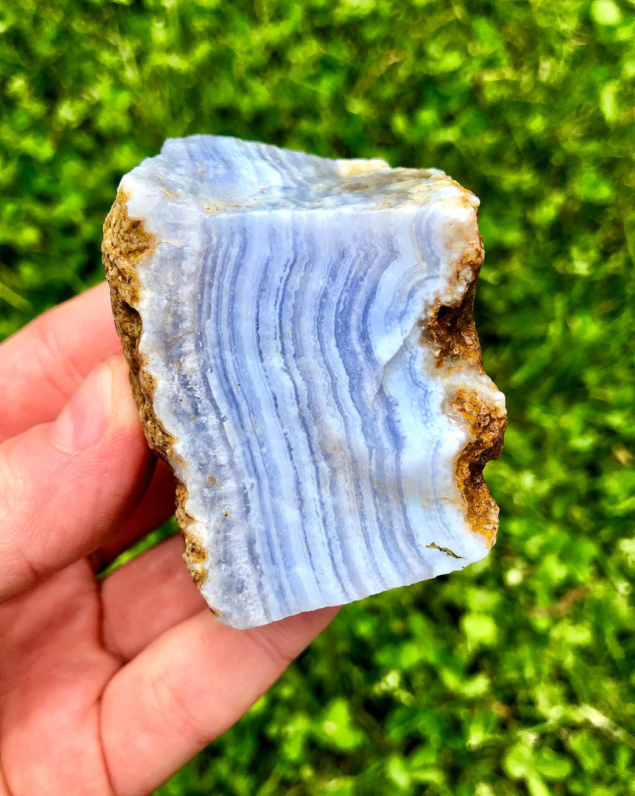
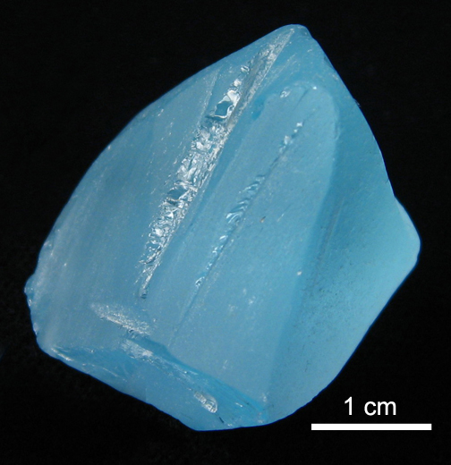
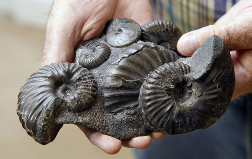
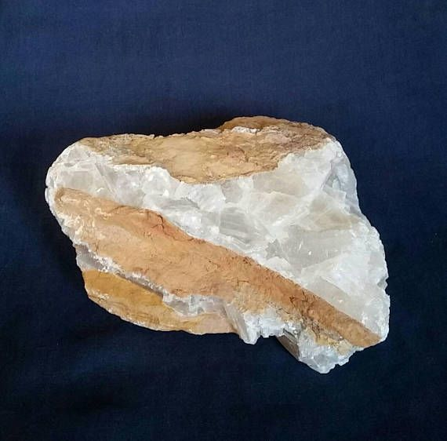
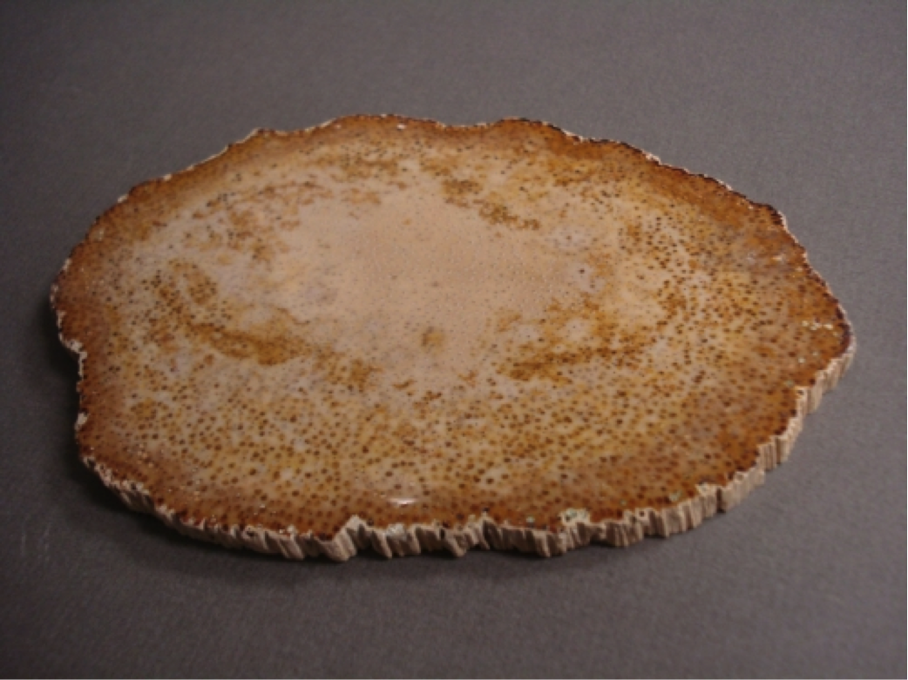

New here?

New to rockhounding and don't know where to start? Not to worry, we will show you the ropes. Click below to head over to our "Getting Started" guide
Getting StartedRocks & Minerals In Texas


Texas rockhounding maps to hunt for crystals, gemstones, minerals, and ores. Texas, with its vast and diverse geology, offers a treasure trove of opportunities for rockhounding enthusiasts. From the mineral-rich Llano Uplift to the fossil-laden Gulf Coastal Plain, there are countless sites to explore and discover. Unearth beautiful topaz, blue agate, and rare petrified palmwood, as well as an array of dinosaur fossils and ancient marine specimens. In Texas, the possibilities for adventure and discovery are as big as the state itself.
Sponsored Dig Site

Own a digsite you would like to advertize in Texas? Contact us for more information about being our sponsor of the month! Email sponsors@rockhounding.org for more information.
Dig With UsPlease always bring appropriate attire and do research before venturing out to rock hunt and crystal hunt. Also, be sure to verify that the location you want to hunt at is available for public access. Rockhounding.org does our best to verify, but it is your responsibility to verify as well because sometimes things change. We are not liable for any actions you take from the information you find on this site.
Snacks & Hydration

Energy Bars
Stay energized with the best energy bars for your rockhounding adventures.
Our Favorites

Must Have Rockhounding Tools


Keeping accurate records of Rockhounding & Gemstone Hunting Locations is a community effort! Know of a good spot that is missing from our maps? Feel free to submit it below. Thank you for your contributions to the rockhounding community!
Popular Rocks, Crystals, & Gemstones In Texas
-

Blue Agate
Blue Agate, a beautiful banded chalcedony, can be found in West Texas, particularly around the Alpine area.
Read More -

Topaz
Texas Topaz, the state gemstone, is mostly found in Mason County, within granite outcrops and streambeds.
Read More -
 Petrified Wood
Petrified WoodAbundant in Texas, Petrified Wood can be found throughout the state, especially in the East Texas Pineywoods region.
Read More -

Ammonite Fossil
Ammonite fossils, ancient marine creatures, can be found in North Texas, especially around the Dallas-Fort Worth area.
Read More -

Gypsum
Found in the Trans-Pecos region of West Texas, Gypsum is a soft mineral used in various applications such as plaster and drywall.
Read More -
 Calcite
CalciteCalcite, a common mineral composed of calcium carbonate, can be found in various locations across Texas.
Read More -
 Fluorite
FluoriteFluorite, a colorful mineral often found alongside other minerals, can be discovered in various locations in Texas, including Burro Mountains and Eagle Pass.
Read More -

Palmwood Fossil
Texas' state stone, Palmwood Fossil, is a petrified wood from ancient palm trees and can be found in several locations across the state.
Read More -
 Smoky Quartz
Smoky QuartzSmoky Quartz, a brownish-gray variety of quartz, can be found in various locations across Texas, including Llano and Gillespie counties.
Read More -
 Barite
BariteBarite, a mineral used in various industrial applications, can be found in the Chihuahuan Desert in West Texas and other locations throughout the state.
Read More
Popular Rock Hunting Areas In Texas
-
 Big Bend National Park
Big Bend National ParkLocated in West Texas, Big Bend National Park is an ideal spot for finding various minerals, agates, and fossils.
Read More -
 Enchanted Rock State Natural Area
Enchanted Rock State Natural AreaEnchanted Rock, near Fredericksburg, offers opportunities to find quartz and other minerals in the granite dome.
Read More -
 Marfa, Texas
Marfa, TexasMarfa, located in West Texas, is a popular area for finding agates and other interesting rocks and minerals.
Read More -
 Llano County
Llano CountyLocated in Central Texas, Llano County is known for its numerous pegmatite dikes, where you can find various minerals and gemstones like topaz, quartz, and feldspar.
Read More -
 Terlingua District
Terlingua DistrictThe Terlingua District in Southwest Texas is known for its mercury mines, where you can find cinnabar and other minerals associated with volcanic activity.
Read More -
:max_bytes(150000):strip_icc()/the-famous-lighthouse-rock-at-palo-duro-canyon-state-park--texas-1253657582-1acf5389dce74bf8869b0df56274e724.jpg) Palo Duro Canyon State Park
Palo Duro Canyon State ParkPalo Duro Canyon, located in the Texas Panhandle, is a great spot for finding petrified wood, agates, and various fossils.
Read More
Geology of Texas
The geologic history of Texas spans more than a billion years, starting with the formation of ancient rocks in the Precambrian era. The state's diverse geology includes massive granite domes, sedimentary layers, and volcanic deposits, which have resulted from various geologic processes over time.
During the Paleozoic era, shallow seas covered Texas, depositing sediments that later became limestone, sandstone, and shale. The Ouachita Mountains, which once stretched across present-day Texas, formed during this time as a result of tectonic plate collisions. In the Mesozoic era, shallow seas again inundated the area, resulting in the formation of the Gulf Coastal Plain and deposits of dinosaur fossils in the western part of the state.
The Cenozoic era saw the formation of the Trans-Pecos volcanic field, which created the stunning landscapes of Big Bend National Park. The Llano Uplift, located in central Texas, is an ancient granite dome that was exposed by erosion over millions of years. Fossil-rich limestone formed during this time can be found in the Edwards Plateau region.
Throughout its geologic history, Texas has experienced significant tectonic activity, sedimentation, and erosion, shaping the state's landscape and creating diverse mineral and fossil resources. The state's abundant natural resources have fueled its economic growth and helped shape its culture and history.